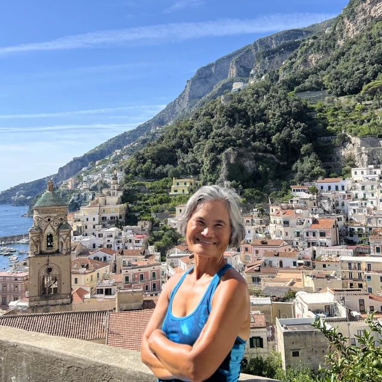
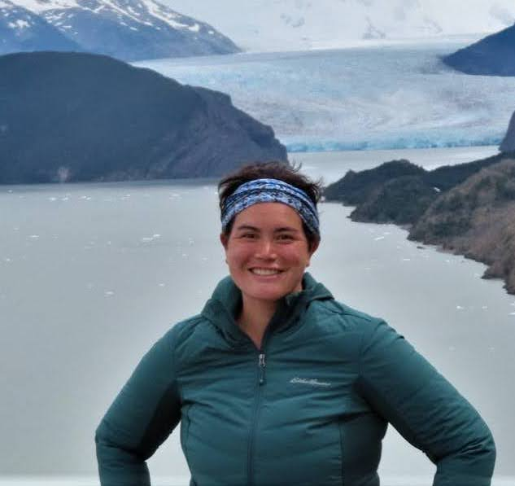

We are a mother-daughter duo who love traveling together and sharing our experiences from around the world. We've hiked New Zealand, Patagonia, Nepal, and many national parks in the U.S.; we've gone on numerous safaris and had amazing wildlife encounters in many countries in Africa as well as in the Galapagos, the Arctic, and Antarctica; we've enjoyed numerous cruises around the world, from luxury to budget-friendly.

After an all-consuming career as a media executive, I took early retirement in 2015 and have joyfully traveled the world ever since.
I’ve been to 70-plus countries and all seven continents, having fallen in love with Antarctica in 2024. My favorite place? Africa, where I’ll return for my 7th time in December of 2025.
Friends frequently sought my travel assistance and I loved helping them. "You should be a travel advisor," everyone told me. So I did!
Now I'm excited to not only share my insider expertise and enthusiasm with clients, but also make their dreams come true, leveraging Virtuoso and Fora Travel's extensive industry resources and relationships.
Powered by Fora, my exceptional expertise, scrutiny, creativity, and communication skills produce show-stopping experiences that are unforgettable.
From cruises to safaris, tours of Europe to weekend getaways, I wholeheartedly embrace the research, planning, advocating, minutiae, and bookings. All you have to do is pack!
See what some clients have to say:
Where do you long to go? What captures your imagination? How can I help get you there?

I am an English professor and TaeKwonDo instructor near Orlando, Florida; in my past life, I was a corporate lawyer in New York City. I have a B.A. from the University of Washington in English and economics, a J.D. from Yale University, and an M.F.A. in creative writing from Columbia University. I also design custom iPhone and Android apps and have a professional coding certification from MITxEmeritus.
I travel often, constantly seeking out beautiful locales and outdoor adventures. (This picture is from the four-day W Trek in Torres Del Paine National Park in Chile.) I am an avid writer, with several novels and one musical in my repertoire, and when I was seven years old I won a national contest to invent and publish a board game. In the past, I've moonlit occasionally as a pianist at a local establishment. Two adorable goldendoodles always keep me on my toes!
regan.kirk@fora.travel My Fora Page